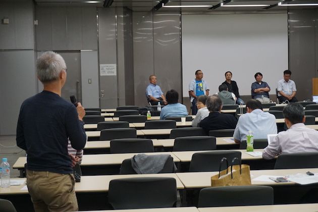

開催報告
第1回ワークショップは、予定通り2016年10月7日（金）の午後1時から、JST東京本館大会議室にて開催されました。
参加者について：
参加者数は以下の表の通りです：
| 事前登録人数 | 比率 | 当日参加人数 | 出席率 | |
|---|---|---|---|---|
| 事前参加登録者 | 53 | 44 | 83.0% | |
| うち情報系研究者と回答 | 14 | 26.4% | 11 | |
| うちJSBi会員 | 5 | 9.4% | 4 | |
| 講演者 | 5 | 5 | ||
| 主催者 | 3 | 3 | ||
| 当日参加者 | 8 | |||
| 計 | 61 | 60 |
なお、時間帯によって参加人数に多少の変動がある（遅れてきた人や途中退席した人がいる）ため、正確には参加者数は55～60名、ということになります。部屋の定員は135名だったため、「多少の余裕はあるが基本的には全席が埋まる」ような状態になりました。
また元々、「JSBi会員で、この分野に関心のある人は少ない」という推測を立てていたのですが、参加人数を見る限りでは、この推測は裏付けられていると言って差し支えないでしょう。更に「情報系研究者」と申告された参加者が3割程度しかいなかったことからも、この分野の研究者が少ないことが見て取れます。
今回のワークショップ開催にあたっては、以下の学会･団体のweb・SNS・メーリングリストなどに広告を掲載していただきました：
- 日本バイオインフォマティクス学会(JSBi)
- 日本質量分析学会(MSSJ)
- 日本プロテオーム学会(JPrOS/JHUPO)
- 情報処理学会(SIG-BIO)
- 日本分子生物学会
- 日本生化学会
- 糖鎖インフォマティクス若手の会
- サイエンスポータル
- 文部科学省・ライフサイエンスの広場
- バイオインダストリー協会
- jPOST
- Mass++ユーザー会
もし「他にこのような団体に広告を掲載した方がいい」といったご意見などがありましたら、本会世話人 (ms-bioinfo-admin@googlegroups.com) まで、もしくは研究会メーリングリストまでお寄せください。
講演と総合討論について：
今回の講師の先生方のご講演は全て、「講演時間は40分程度」ということのみを指定した上で、「内容･構成は100％、講演者にお任せする」という形式で自由にご講演いただきました。結果的に、短時間の講演では望めないような、突っ込んだ内容のご講演をいただけたと考えています。
一部、未発表の内容についてもご講演いただいているため、ご講演の具体的な内容について報告することは避けますが、実験系主体の学会では通常踏み込まないような、アルゴリズムや実装手法にまでついて触れた、充実したご講演ばかりでした。
なお、「講演会の模様をwebで中継する予定はないのか」というお問い合わせもいただいています。今回は実施しませんでしたが、今後希望が多いようでしたら、講演者から許可が得られた講演に限って中継を検討したいと考えます。
更に講演と同じ40分の時間を割き、講演者の先生方をパネラーとして（予定通り）「総合討論」を行いました。一般に、このような総合討論は掛け声倒れに終わることが多いため、「この分野の研究者人口を増やすためには何をすれば良いか」という討論テーマを事前に想定し、パネラー（講演者）の先生方には事前にアイディアなどをご検討いただくようにお願いしています。結果的に、会場からのご意見（事前の“仕込み”などは一切ありませんでしたので、全て参加者にその場で自発的にご発言いただいたものです）や、それに対応するパネラーからのご発言が続き、特に“沈黙が続く気まずい雰囲気”になることもなく、様々な意見について討論ができたかと考えます。
具体的には、以下のようなコメント･意見がありました:
- このようなワークショップは今後も定期的に継続しよう
- ハッカソンを開催し、共同作業で何か作り上げてはどうか
- 人脈を使って（研究コミュニティを）広げていきたい。その際、共通の問題意識を持った研究者（とSE）が意見交換し、議論できる場が必要（→ハッカソン？）
- 予算がないところに人は集まらない
- テーマを選べば、予算は充分あるのではないか
- 質量分析法のインフォマティクス研究がどのような成果をもたらし、どのように発展していくか、という展望を積極的に発信するべきだ。そのような展望が開け、周知されることによってこそ、この分野への新たな参入者も生まれる
なお、「ハッカソン (Hackathon)」とは、hackingとmarathonから作られた造語で、「マラソン的にハックを行う」という意味（この場合の「ハック」は犯罪的な意味のない、本来の意味合いで、「プログラムを（楽しんで）書き、利用する」という意味とほぼ同義）で、通常、「複数の参加者が合宿形式で一堂に会し、（必要に応じて）意見を交換しながら自分の（またはグループの）テーマであるプログラムを作り上げる」ことを意味します（コンペになっていることもありますが、それは必ずしも必要条件ではありません）。特に日本では、情報･システム研究機構（ROIS）に属するデータサイエンス研究基盤・ライフサイエンス統合データベースセンター(DBCLS)と科学技術振興機構(JST)･バイオサイエンスデータベースセンター(NBDC)が主催して、毎年「BioHackathon （国際開発者会議）」「国内版バイオハッカソン」（どちらも5～6日程度連続）が開催されており、ここでは「生命科学で必要な情報系の作業」、即ち本来のhacking（プログラム作成）にとどまらない、「データベースの構造決定」や「そのために必要な企画、オントロジーの整備」なども行われています。
総合討論では「様々な意見を提示する」ことを目標としており、「結論を出す」ことは意図していなかったため、ワークショップ或いは研究会としての何らかの結論は敢えて出しておりませんが、これらのご意見･コメントについては研究会としても念頭に置いて、今後の活動を企画したいと考えています。
総合討論の内容についての世話人のコメント：
なお、総合討論では世話人は議事進行に徹しておりましたが、ワークショップ自体が終了していることでもありますので、これらのご意見･コメントのうち幾つかに対してコメントさせていただきます。
ハッカソンの開催について
分野の活性化という意味では有効な方法となる可能性がありますが、ハッカソンでは会場（ホテルの結婚式場を1週間借り切ることが多いです）にネット回線を増設するなど、相当の資源を投入しますから、「その期間中に具体的に目に見える成果を挙げる」必要があり、「問題の解決策について議論を繰り返す」といったことに長い時間を割くのはハッカソンには相応しくない形態です。従って我々の分野でハッカソンを行う場合には、「どのような問題について、どのような解決策をとるか」を事前に充分に議論する場を設けることが必要で、そのような会合と組み合わせて実施することが必要になりそうです。
また更に、質量分析以外の分野、例えばゲノム研究分野の研究者やエンジニアに対して、我々の抱える問題や解決策などを提示することで興味を持ってもらう、というのもハッカソンの重要な機能（互いに、相手の分野での問題点を知ったり、或いはデータ処理の手法について知ったりする）です。従って「質量分析以外の分野」の研究者なども参加する会合のほうが望ましい、ということになります。
この件については、（実施する方向で）具体的にどのように実施すればいいかについて、今後更に検討を続けていく予定です。
「この分野の研究がどのような成果をもたらすか」提示することについて
総合討論の終盤に、（上述のように）研究の発展性や今後の展望などについて積極的に発信することこそが、分野の発展のために必要である、という提言がありました。この見解は、（確認した限り）講演者の先生方も世話人も等しく賛成です。但し通常、「将来的な展望を含む（それにつながる）研究」は、（世話人がワークショップの最初で述べた表現を用いれば）computational mass spectrometry （質量分析スペクトルからサンプルを分離しつつ構造を決定する）ではなくomics informatics （computational mass spectrometryから得られた情報を基に生命科学的な結論の得られるような解析を行う）から得られることが多い、と考えられます（同じ「解析」という言葉を使っていても、これら両者での「解析」という言葉が意味する具体的な内容は相当に異なっています）。従って、質量分析法を用いた研究の「後半」部分（その研究の内容に強く依存するため、複数の研究間で等しく重要な展望や、それぞれに関わる研究者間での興味の対象について、コンセンサスを得るのが難しい部分です）に相当する「将来的な展望」を、研究の「前半」部分に相当する質量分析インフォマティクスの形で発信するのは、現状では少々難しいかもしれません。
ともあれ、このような提言を念頭に置いて、今後の活動についても計画していく所存です。
次回のワークショップは来春開催を目指し、招待講演以外に、一般公募演題（ショート口頭発表）も募集する予定です。ぜひご参加ください。
世話人： 吉沢 明康 （京都大学化学研究所）
河野 信 （ライフサイエンス統合データベースセンター）
守屋 勇樹 （ライフサイエンス統合データベースセンター）
Page Last Updated: Nov. 26, 2016